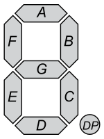

Output Devices(Actuators)
Actuators
As electronic outputs, Actuators are controlled by computer processors, allowing to be turned on or off or even for controlled output(e.g. speed) through the use of varying voltage.
Types of Output Devices available
- Displays
- Liquid Crystal Display:
The LCD we have has 2 rows , 16 characters per row. The LCD is connected to the arduino through a I2C which has 4 pins(Vcc,GND,SDA,SCL). To programme the LCD, we need to install a library(check previous lesson on how to install) into Arduino called "LiquidCrystal_I2C". For a guide on how to setup and use the LCD or to get the zip file for the library, click here.
- LED:
There are many types of LEDs that can be used, from the more common Diodes to the more complex NeoPixel. NeoPixels are strips of RGB LEDs that can be individually programmed.
- 7-segment display:

Has 7 individual LEDs housed in a single unit that can be individually activated to display numbers.
- Motors
- DC-Motors:
DC motors, unlike the rest of the motors covered, are capable of continuous, high speed rotations. They are controlled using voltage control and Pulse Width Modulation (PWM). These motors draw a lot of current, thus needing relays or transistors to control it.
- Stepper Motors
Stepper Motors are precision motors that can rotate a centain, specified number of steps. Servo and Stepper motors are very similar in the sense that they are used for precison turning but differ from how they calculate how much to turn. Stepper uses steps and there are max steps per motor. The 28BYJ-48 Unipolar stepper motor that was provided has a maximum of 2038 steps.
- Servo Motors:
Servo Motors are precision motors that can rotate a centain, specified angle. Servo and Stepper motors are very similar in the sense that they are used for precison turning but differ from how they calculate how much to turn. Servo uses angles and there are angle limits to every motor. The SM-S3317B has an angle range of 0-180 degrees with torque adjusted by voltage.